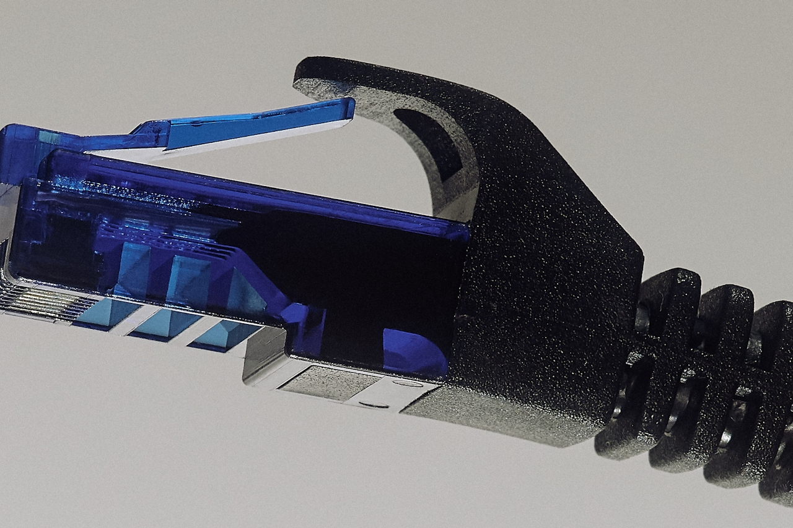

Generative Artificial Intelligence (Gen AI) is everywhere. What was once a quaint experimental technology
has seemingly become the elephant in every room. Gen AI is well on its way to becoming a reliable and affordable
alternative to traditional creative work, and whether we like it or not, AI advertising could become the default
in the years to come. Before we get there, it's time to discuss 'AI diversity' and the responsibilities that come
with a technology that promises limitless generative choices. After all, when anyone can generate diversity, why
should they bother with the real thing?
Creativity Condondrum
The negative impacts of poor representation are clear, it can lead to stereotypes and bigotry, causing serious harm to marginalised groups.
But it can sometimes feel like the benefits of positive representation are misunderstood. Is representation meant to give us a warm, fuzzy
feeling, or should it reflect the genuine liberation and empowerment of oppressed groups?
The creative industry isn't well positioned to address these questions, 50% of UK workers in creative fields come from high socio-economic
backgrounds (Social Mobility Commission, link) and in the US, creative occupations are 24% less racially and ethnically diverse than other
fields (CVSuite™, link). While this dynamic is shifting, many marginalised groups are still struggling to get their foot in the door. So,
what happens if Gen AI becomes the norm in advertising? AI can certainly simulate diversity, but it does nothing to address why more diversity
is needed in the first place. So, when a marketing campaign uses AI depictions of diverse groups without actually involving or compensating
them, do they have a responsibility to those communities? What does responsibility even look like?
Death To Stock | 2024
Is The Diversity In The Room With Us?
This year, Coca-Cola’s Christmas ad was a little different, although at first glance it might be difficult to pinpoint why.
It features a familiar cast of happy customers, joyful tunes, and squeaky clean American omptimism, set against a snow-topped
backdrop. But the actors in this advert were never paid, in fact they never existed in the first place. This year Coca-Cola went
all-in on Gen AI, collaborating with AI studios Secret Level, Silverside AI and The Wild Card to generate an advertisement, as
opposed to filming it (Campaign, link). The public reaction has been mixed at best, verging somewhere between humour and existential
dread (Forbes, link). Many found the footage to be strange and confusing, tipping towards the uncanny valley in parts. And while
there’s a debate to be had about the fidelity of the ad, I’m more concerned about the characters it depicts.
Coca-Cola’s ad features a diverse cast of characters — young and old — many of the shots depicting people of colour. At
face value, this is a great choice. Showcasing the world as it is, allowing people to feel connected and understood, to
feel they are part of a whole. These are tangible benefits of inclusive advertising and they shouldn’t be ignored. But
when you can’t ask your actors for consent, when you can’t pay them for using their likeness, where do you draw the line
between appreciation and appropriation? To use an example closer to home — if a campaign generates queerness without
actually including queer stakeholders, the trade off becomes difficult to rationalise. The least fortunate members of
the queer community don’t need rainbow billboards, they need housing, support and freedom from violence. Without even
the tenuous draw of knowing a queer person got paid – somewhere, at some point, the exercise begins to feel like cultural
extraction, or even theft.
When corporations employ certain demographics for advertising, it’s not just a transaction between individual actors and
marketing teams. When you employ a marginalised actor you’re also paying for a type of social currency, the right to
association. Marginalised individuals are often reduced to representations of the whole, reluctantly positioned as
spokespeople for their communities. While this dynamic is wholly unfair, these types of biases exist at a subconscious
level – to a greater or lesser degree we are all influenced by them. So audiences could be forgiven when interpreting
Coca-Cola’s advert as a communal endorsement, as a license to buy their products. But in the absence of real actors,
have they paid fairly for this endorsement? This transaction isn’t just about currency, organisations might earn the
right to align themselves with marginalised groups in a variety of ways. A homeless charity has earned the right to
represent homelessness in a responsible manner, because these representations seek to benefit the same people they
depict. From community investment to diversity behind the scenes, organisations using AI imagery need to find ways
to settle the imbalance this technology has created — but communties should decide what that looks like, and when
to push back.
Coca Cola | 2024
So, What Now?
As AI-generated content becomes increasingly prevalent, we need to set clear ethical standards on use. If audiences
perceive AI outputs as real (consciously or subconsciously) then the use of these images should adhere to the same
moral standards as actual imagery, including fair representation and consent. AI should be viewed as a public resource
that carries key responsibilities, not as a magic wand that can circumvent communities and cut down on costs.
Championing diversity at all stages of the AI life-cycle, not just in outputs, can mitigate some of these concerns.
Diversity among AI engineers & computer scientists has been shown to increase the likelihood that AI bias is identified
and addressed (AI and Ethics, link), and building up diverse voices in the creative industries will help to ensure AI
outputs are authored by the same communities they depict.
Creating rules on the fair use of AI imagery is also vital to reduce harm and ensure self-regulation doesn’t lead to
inconsistent standards across the industry. This should include content credentials, disclaimers, copyright flagging,
fair representation and community consent. If a creative team lacks the relevant cultural understanding to depict a
community with integrity, they should involve community stakeholders and advocates, hire real-life actors and models,
or simply pass the project to someone else. These rules shouldn’t be best practice, they should be standard practice.

Death To Stock | 2024
An Unclear Future
We can’t turn back the clock on AI, and we can’t reasonably expect organisations to hold off on the deployment of these technologies.
However, understanding the dangers of AI generated diversity and setting clear guidelines can help us to utilise these tools in a way
that gives agency to marginalised people instead of exploiting them.
All that being said, it still begs the question — good representation or bad representation — can we truly find liberation at the bottom of a banner ad?